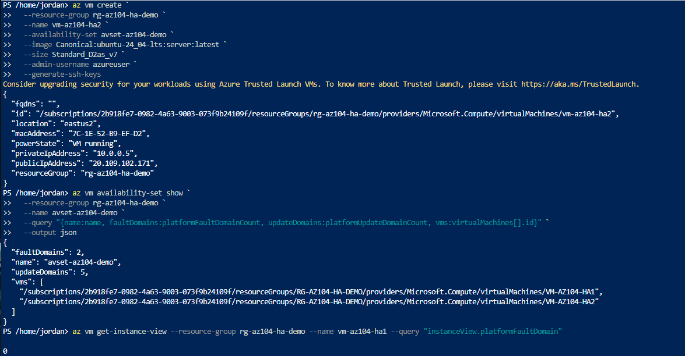
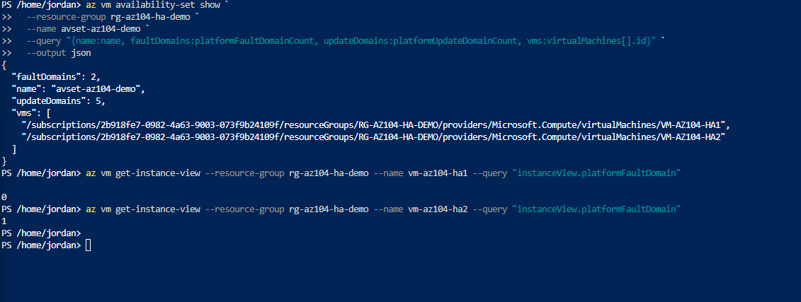

Deployed an Availability Set with two VMs to confirm real fault-domain separation, then a small VM Scale Set to compare the manual, fixed-membership high-availability model against a managed, elastic one. Torn down the same session per cost discipline, since every resource here bills by the hour.
2 platform fault domains is the maximum East US 2 supports for standard availability sets, and 5 update domains is the Azure default ceiling. Splitting exactly 2 VMs across 2 fault domains was the cleanest way to get a real, verifiable fault-domain split rather than a set that happened to have unused capacity.
The Scale Set deployment failed on a regional vCPU quota (4 total, already fully used by the two Availability Set VMs) before it had provisioned anything billable. Rather than requesting a quota increase for a lab resource that would be deleted within the hour anyway, deleting the two VMs immediately, once their fault-domain screenshots were already captured, freed the quota cleanly and kept the lab moving without waiting on Microsoft support.
A separate subscription-level quota, 3 public IPs total, was already exhausted by an orphaned IP left over from Lab 3.1's resource-group mixup. Rather than wait on that leftover group's slow deletion to free a slot, deploying the Scale Set with --public-ip-address "" sidestepped the quota entirely. The lab's actual goal, comparing instance distribution across the two HA models, doesn't require external reachability, so this cost nothing in terms of what the lab needed to demonstrate.
Built both high-availability models side by side and worked through three separate real quota limits along the way.


"If you can build it again tomorrow without looking at yesterday's code, you've learned it. If you need to copy and paste it again, you've only completed a tutorial."
I am learning Infrastructure as Code deliberately, specifically Terraform and Bicep, rather than treating them as copy-paste snippets. The code below reflects actual understanding of each resource, not just reproduced boilerplate.
Bicep exposes orchestrationMode explicitly on the scale set resource, which is what actually determines whether instances behave as standalone VMs (Flexible) or as sub-resources of the set (Uniform) - the distinction that caused most of the CLI friction in this lab.
az vm get-instance-view. The equivalent data for Flexible-orchestration Scale Set instances wasn't reliably available through several CLI commands or the portal's Instances blade in this session, a real, documented tooling gap rather than a configuration mistake.